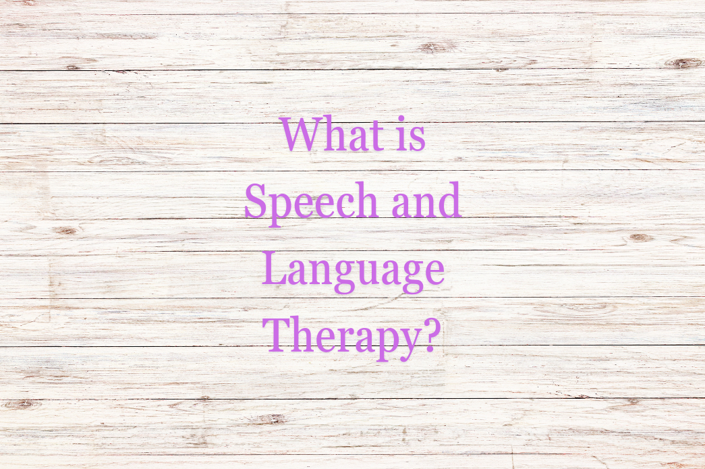
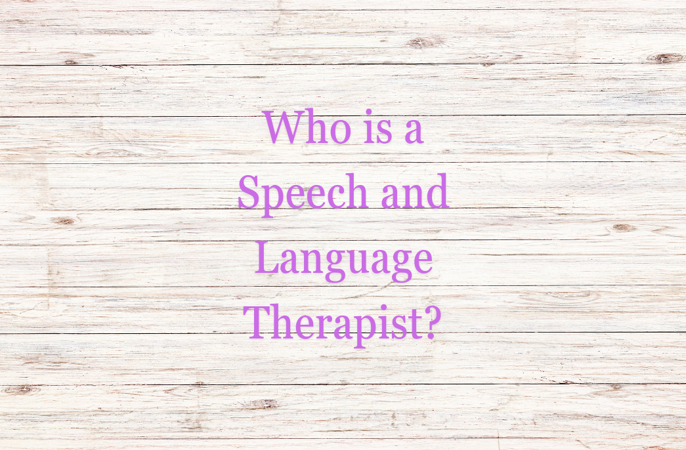
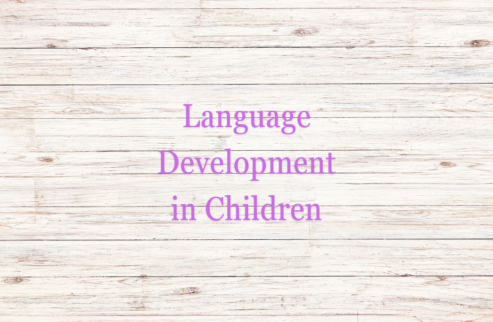

What is Speech and Language Therapy?

Speech and language therapy is a professional treatment and rehabilitation process for speech and language disorders. This type of therapy offers solutions for speech difficulties, voice disorders, stuttering, and similar issues.
Who is a Speech and Language Therapist?

Speech and language therapists assess, diagnose, and treat speech and language disorders. They help individuals improve their communication skills and enhance their quality of life.
Language Development in Children

Language development in children progresses rapidly from birth. Speech and language therapists monitor developmental stages, assess delays, and provide necessary interventions.